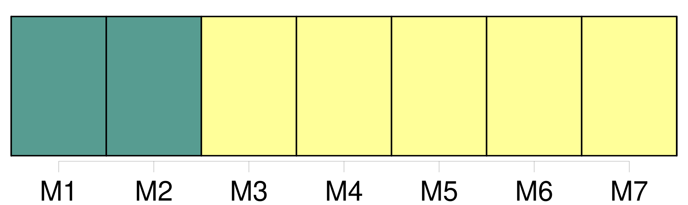

Longueur nb maillons : 181 mentions |
 |
[Convention relative au renforcement de la Commission interaméricaine du thon tropical établie par la convention de 1949 entre les États-Unis d'Amérique et la République du Costa Rica] ( « convention d'Antigua » )
0010 -0025
Article II : Objectif
Article III : Zone d'application de [la convention]
Titre II : Conservation et utilisation des stocks de poissons visés par [la convention]
Les membres de la Commission, directement et par l'intermédiaire de la Commission, appliquent l'approche de précaution, telle que définie dans les dispositions pertinentes du code de conduite et / ou de l'accord de New York de 1995, pour la conservation, la gestion et l'utilisation durable des stocks de poissons visés par [la présente convention] [7 phrases]
Aucune disposition de [la présente convention] ne doit porter atteinte ou nuire à la souveraineté ou aux droits souverains des États côtiers liés à l'exploration et à l'exploitation, à la conservation et à la gestion des ressources biologiques marines dans les zones relevant de leur souveraineté ou de leur juridiction nationale tels qu'établis dans la convention sur le droit de la mer ou au droit qu'ont tous les États à ce que leurs ressortissants pêchent en haute mer conformément à la convention sur le droit de la mer. [1 phrases]
Les mesures de conservation et de gestion établies pour la haute mer et celles adoptées pour les zones relevant de la juridiction nationale doivent être compatibles, afin de garantir la conservation et la gestion des stocks de poissons visés par [la présente convention] [10 phrases]
La Commission exerce les fonctions suivantes, en accordant la priorité aux thons et aux espèces apparentées :
Chaque membre de la Commission peut également conserver son propre programme, conforme aux directives adoptées par la Commission ;
Lorsque la Commission adopte des mesures conformément à l'approche de précaution en l'absence d'informations scientifiques appropriées, ainsi que prévu à l'article IV, paragraphe 2, de [la présente convention] , la Commission s'efforce d'obtenir dans les meilleurs délais les informations scientifiques nécessaires au maintien ou à la modification de ces mesures ; [1 phrases] La Commission entretient un personnel qualifié sur les questions relatives à [la présente convention] , y compris dans les domaines administratif, scientifique et technique, sous la supervision du directeur, et veille à ce qu'il comprenne tout le personnel nécessaire à une application efficace et effective de [la présente convention] [2 phrases]
Lorsqu'elle examine les directives à formuler pour le programme de travail sur les questions scientifiques que doit traiter le personnel scientifique, la Commission tient compte, entre autres, des conseils, des recommandations et des rapports du comité scientifique consultatif établi en vertu de l'article XI de [la présente convention] [8 phrases]
Cette règle s'applique également aux réunions des organes subsidiaires établis en vertu de [la présente convention] [3 phrases] Les membres élisent un président et un vice-président entre, à moins qu'il n'en soit décidé autrement, les distinctes parties à [la présente convention] [2 phrases]
Sauf disposition contraire, toutes les décisions prises par la Commission lors de réunions convoquées conformément à l'article VIII de [la présente convention] le sont par consensus des membres de la Commission présents lors de la réunion en question. [1 phrases] Les décisions concernant l'adoption d'amendements à [la présente convention] et à [ses] annexes ainsi que les invitations à adhérer à [la présente convention] conformément à l'article XXX, point c ), de [la présente convention] requièrent le consensus de toutes les parties. [2 phrases]
Le consensus de tous les membres de la Commission est requis pour les décisions concernant : [11 phrases]
Les décisions adoptées par la Commission conformément à [la présente convention] lient tous les membres quarante-cinq ( 45 ) jours après leur notification, sauf indication contraire dans [la présente convention] ou à moins qu'il n'en ait été convenu autrement lors de la prise de décision. [3 phrases]
Les fonctions du comité sont celles établies à l'annexe 3 de [la présente convention] [19 phrases]
Les fonctions du comité sont celles établies à l'annexe 4 de [la présente convention] [11 phrases] La Commission nomme, conformément aux règles de procédure adoptées et en tenant compte de tous les critères qui y sont établis, un directeur dont les compétences dans le domaine de [la présente convention] sont établies et généralement reconnues, en particulier en ce qui concerne ses aspects scientifiques, techniques et administratifs, qui rend compte à la Commission et que la Commission peut révoquer à sa discrétion. [2 phrases]
Les fonctions du directeur sont les suivantes : [1 phrases] Dans l'exercice de leurs fonctions, le directeur et le personnel de la Commission s'abstiennent d'agir d'une manière qui pourrait être incompatible avec leur statut ou avec l'objectif et les dispositions de [la présente convention] Ils n'ont pas non plus d'intérêt financier dans des activités telles que l'étude et la recherche, l'exploration, l'exploitation, le traitement et la commercialisation des stocks de poissons visés par [la présente convention] [1 phrases]
Article XIII : Personnel scientifique [1 phrases] La Commission adopte tous les ans son budget pour l'année suivante, conformément à l'article IX, paragraphe 3, de [la présente convention] [2 phrases]
Le directeur soumet à l'examen de la Commission un projet détaillé de budget annuel qui précise les dépenses envisagées à partir des contributions visées à l'article XV, paragraphe 1, ainsi que celles visée à l'article XV, paragraphe 3, de [la présente convention] [1 phrases] La Commission tient une comptabilité séparée pour les activités réalisées en vertu de [la présente convention] et en vertu de l'APICD. [5 phrases] Le montant de la contribution de chaque membre de la Commission au budget est défini conformément au schéma adopté et, selon les circonstances, amendé par la Commission, conformément à l'article IX, paragraphe 3, de [la présente convention] [2 phrases]
Les contributions convenues conformément aux dispositions du paragraphe 1 du présent article doivent permettre le fonctionnement de la Commission et financer en temps utile le budget annuel voté conformément à l'article XIV, paragraphe 1, de [la présente convention] [1 phrases]
La Commission doit établir un fonds destiné à recevoir des contributions volontaires pour la recherche et la conservation des stocks de poissons visés par [la présente convention] et, le cas échéant, des espèces associées ou dépendantes, ainsi que pour la conservation de l'environnement marin. [1 phrases]
Sans préjudice des dispositions de l'article IX de [la présente convention] , et à moins que la Commission n'en décide autrement, si un membre de la Commission accumule des arriérés de contributions d'un montant égal ou supérieur à la somme des contributions qu'il doit au titre des vingt-quatre mois précédents, ce membre n'a pas le droit de participer à la prise de décisions au sein de la Commission avant d'avoir satisfait à ses obligations en vertu du présent article. [3 phrases]
La Commission, dans son processus de prise de décisions et dans ses autres activités, promeut la transparence quant à l'application de [la présente convention] , entre autres, par le biais de : [1 phrases] Les représentants des États non parties, des organisations intergouvernementales appropriées et des organisations non gouvernementales, y compris des organisations écologistes dont l'expérience est reconnue dans les domaines de compétence de la Commission, ainsi que l'industrie thonière de tout membre de la Commission opérant dans la zone de [la convention] , en particulier la flotte de pêche thonière, ont la possibilité de participer aux réunions de la Commission et de ses organes subsidiaires, en qualité d'observateurs ou autres, selon le cas, conformément aux principes et critères établis à l'annexe 2 de [la présente convention] ou à ceux que la Commission peut adopter. [1 phrases]
Titre IV : Droits et obligations des membres de la commission [1 phrases]
Chaque partie prend les mesures nécessaires pour garantir l'application et le respect de [la présente convention] et de toute mesure de conservation et de gestion adoptée en vertu de [celle -ci] , y compris l'adoption des lois et règlements nécessaires. [1 phrases]
Chaque partie fournit à la Commission toutes les informations nécessaires à la réalisation de l'objectif de [la présente convention] , y compris les informations statistiques et biologiques et celles relatives à ses activités de pêche dans la zone de [la convention] , et met à disposition de la Commission les informations concernant les actions entreprises pour appliquer les mesures adoptées conformément à [la présente convention] , lorsque la Commission le requiert et en tant que de besoin, sous réserve des dispositions de l'article XXII de [la présente convention] et conformément aux règles de procédure élaborées et adoptées par la Commission. [1 phrases]
Chaque partie doit, dans les meilleurs délais, par l'intermédiaire du directeur, informer le comité chargé de l'examen de l'application des mesures adoptées par la Commission établi conformément aux dispositions de l'article X de [la présente convention] : [3 phrases]
Chaque partie prend des mesures afin de garantir que les navires opérant dans les eaux relevant de sa juridiction nationale satisfont à [la présente convention] et aux mesures adoptées en vertu de [celle -ci] [1 phrases] Chaque partie, lorsqu'elle a des motifs raisonnables de croire qu'un navire battant pavillon d'un autre État se livre à une activité qui compromet l'efficacité des mesures de conservation et de gestion adoptées pour la zone de [la convention] , attire sur ce point l'attention de l'État du pavillon concerné et peut, le cas échéant, attirer l'attention de la Commission sur ce point. [3 phrases]
Chaque partie, à la demande de la Commission ou d'une quelconque autre partie et, lorsque des informations pertinentes selon lesquelles un navire relevant de sa juridiction a exercé des activités allant à l'encontre des mesures adoptées conformément à [la présente convention] lui ont été communiquées, doit mener une enquête approfondie et, le cas échéant, agir conformément à sa législation nationale et informer, dans les meilleurs délais, la Commission et, s'il y a lieu, l'autre partie, des conclusions de son enquête et des actions entreprises. [1 phrases]
Chaque partie applique, conformément à sa législation nationale et d'une manière compatible avec le droit international, des sanctions d'une gravité suffisante pour garantir efficacement le respect des dispositions de [la présente convention] et des mesures adoptées en vertu de [celle -ci] et priver les contrevenants des bénéfices de leurs activités illégales, y compris, le cas échéant, le rejet, la suspension ou le retrait de leur autorisation de pêcher. [1 phrases]
Les parties dont les côtes sont limitrophes de la zone de [la convention] , ou dont les navires pêchent des stocks de poissons visés par [la présente convention] ou sur le territoire desquelles les captures sont débarquées et traitées coopèrent afin de garantir le respect de [la présente convention] et l'application des mesures de conservation et de gestion adoptées par la Commission, y compris, en tant que de besoin, par l'adoption de mesures et de programmes de coopération. [1 phrases]
Si la Commission détermine que des navires pêchant dans la zone de [la convention] ont exercé des activités qui compromettent l'efficacité des mesures de conservation et de gestion adoptées par la Commission ou qui les enfreignent d'une autre manière, les parties peuvent engager une action, en accord avec les recommandations adoptées par la Commission et conformément à [la présente convention] et au droit international, pour dissuader ces navires d'exercer de telles activités jusqu'à ce que l'État du pavillon ait pris les mesures appropriées pour s'assurer que ces navires ne poursuivront pas ces activités.
Article XIX : Application, respect de la réglementation et pouvoirs de police des entités de pêche [1 phrases]
Chaque partie, conformément au droit international, prend les mesures nécessaires pour garantir que les navires battant son pavillon respectent les dispositions de [la présente convention] ainsi que les mesures de conservation et de gestion adoptées en vertu de [celle -ci] , et qu'ils ne se livrent à aucune activité compromettant l'efficacité de ces mesures. [1 phrases] Aucune partie ne permet à un navire autorisé à battre son pavillon d'être utilisé pour la pêche des stocks de poissons visés par [la présente convention] , à moins qu'il n'y ait été autorisé par l'autorité ou les autorités compétentes de cette partie.
Une partie ne permet aux navires battant son pavillon d'être utilisés pour la pêche dans la zone de [la convention] que lorsqu'elle peut s'acquitter efficacement des responsabilités qui lui incombent en ce qui concerne ces navires conformément à [la présente convention] [1 phrases]
Outre ses obligations susvisées aux paragraphes 1 et 2 du présent article, chaque partie prend les mesures nécessaires pour garantir que les navires battant son pavillon ne pêchent pas dans les zones relevant de la souveraineté ou de la juridiction nationale d'un autre État de la zone de [la convention] sans détenir la licence, le permis ou l'autorisation correspondant, délivré par les autorités compétentes de cet État.
Article XXI : Obligations des entités de pêche [1 phrases]
La Commission établit des règles de confidentialité applicables à toutes les instances et personnes ayant accès aux informations en vertu de [la présente convention] [3 phrases]
La Commission s'attache à adopter des mesures relatives à l'assistance technique, au transfert de technologie, à la formation et à d'autres formes de coopération, afin d'aider les pays en développement membres de la Commission à se conformer à leurs obligations découlant de [la présente convention] , ainsi que pour améliorer leur capacité à développer la pêche relevant de leur juridiction nationale respective et pour participer de manière durable à la pêche en haute mer. [3 phrases]
La Commission coopère avec des organisations et des arrangements de gestion des pêcheries sous-régionaux, régionaux et mondiaux et, le cas échéant, établit des arrangements institutionnels appropriés tels que des comités consultatifs, en accord avec ces organisations et arrangements, dans le but de promouvoir la réalisation de l'objectif de [la présente convention] , d'obtenir les meilleures informations scientifiques disponibles, et d'éviter les doubles emplois s'agissant de leurs travaux. [3 phrases] Lorsque la zone de [la convention] empiète sur une zone réglementée par une autre organisation de gestion des pêcheries, la Commission coopère avec cette organisation afin de garantir la réalisation de l'objectif de [la présente convention] [5 phrases]
Tout membre peut consulter l'un ou plusieurs des membres pour tout différend relatif à l'interprétation ou à l'application des dispositions de [la présente convention] afin de parvenir à une solution satisfaisante pour tous dans les meilleurs délais. [6 phrases]
La Commission et ses membres encouragent tous les États et les organisations régionales d'intégration économique visés à l'article XXVII de [la présente convention] et, le cas échéant, les entités de pêche visées à l'article XXVIII de [la présente convention] qui ne sont pas membres de la Commission, à le devenir ou à adopter des lois et règlements conformes à [la présente convention] [1 phrases]
Les membres de la Commission échangent des informations, directement ou par l'intermédiaire de la Commission, concernant les activités des navires des non membres qui compromettent l'efficacité de [la présente convention] [1 phrases] La Commission et ses membres coopèrent, de manière compatible avec [la présente convention] et le droit international, en vue de dissuader conjointement les navires des non membres de pratiquer des activités compromettant l'efficacité de [la présente convention] [2 phrases]
[La présente convention] est ouverte à la signature, à Washington, à compter du 14 novembre 2003 jusqu'au 31 décembre 2004 : [1 phrases]
En ce qui concerne les organisations régionales d'intégration économique visées au paragraphe 1 du présent article, aucun État membre d'une telle organisation ne peut signer [la présente convention] à moins qu'il ne représente un territoire situé en dehors du champ d'application territorial du traité établissant l'organisation et sous réserve que la participation de cet État membre soit limitée exclusivement à la représentation des intérêts de ce territoire. [1 phrases]
Toute entité de pêche dont les navires ont pêché des stocks de poissons visés par [la présente convention] à un quelconque moment au cours des quatre ans ayant précédé l'adoption de [la présente convention] peut exprimer son engagement ferme à respecter les dispositions de [la présente convention] et à observer toute mesure de conservation et de gestion adoptée en vertu de [celle -ci] : [2 phrases]
L'engagement exprimé conformément au paragraphe 1 du présent article prend effet à la date visée à l'article XXXI, paragraphe 1, de [la présente convention] , ou à la date de la communication écrite visée au paragraphe 1 du présent article, si celle -ci est postérieure. [1 phrases]
Toute entité de pêche susvisée peut exprimer son engagement ferme à respecter les dispositions de [la présente convention] si elle était amendée conformément à l'article XXXIV ou à l'article XXXV de [la présente convention] par le biais d'une communication écrite adressée à cette fin au dépositaire, conformément à la résolution visée au paragraphe 1 du présent article. [1 phrases]
L'engagement exprimé conformément au paragraphe 3 du présent article prend effet aux dates visées à l'article XXXIV, paragraphe 3, et à l'article XXXV, paragraphe 4, de [la présente convention] , ou à la date de la communication écrite visée au paragraphe 3 du présent article, si celle -ci est postérieure.
Article XXIX : Ratification, acceptation ou approbation
Article XXX : Adhésion [1 phrases]
[La présente convention] entre en vigueur quinze ( 15 ) mois après le dépôt auprès du dépositaire du septième instrument de ratification, d'acceptation, d'approbation ou d'adhésion des parties à la convention de 1949 qui étaient parties à cette convention à la date à laquelle [la présente convention] a été ouverte à la signature. [1 phrases]
Après la date d'entrée en vigueur de [la présente convention] , pour tout État ou toute organisation régionale d'intégration économique qui satisfait aux exigences de l'article XXVII ou de l'article XXX, [la présente convention] entre en vigueur pour cet État ou cette organisation régionale d'intégration économique le trentième ( 30e ) jour suivant le dépôt de son instrument de ratification, d'acceptation, d'approbation ou d'adhésion. [1 phrases]
Dès l'entrée en vigueur de [la présente convention] , [celle -ci] prévaut, en ce qui concerne les relations entre les parties à [la présente convention] et à la convention de 1949, sur la convention de 1949. [1 phrases]
Dès l'entrée en vigueur de [la présente convention] , les mesures de conservation et de gestion et les autres arrangements adoptés par la Commission conformément à la convention de 1949 restent en vigueur jusqu'à leur échéance ou leur abrogation par décision de la Commission ou leur remplacement par d'autres mesures ou arrangements adoptés conformément à [la présente convention] [1 phrases]
Dès l'entrée en vigueur de [la présente convention] , toute partie à la convention de 1949 qui n'a pas encore accepté d'être liée par [la présente convention] est réputée demeurer membre de la Commission, sauf si une telle partie décide de ne pas rester membre de la Commission en notifiant par écrit cette décision au dépositaire avant l'entrée en vigueur de [la présente convention] [1 phrases]
Dès l'entrée en vigueur de [la présente convention] , pour toutes les parties à la convention de 1949, cette dernière est considérée comme ayant pris fin conformément aux règles pertinentes du droit international telles que définies dans l'article 59 de la convention de Vienne sur le droit des traités. [1 phrases] Conformément à ses lois et règlements, un État ou une organisation régionale d'intégration économique qui satisfait aux exigences de l'article XXVII ou de l'article XXX de [la présente convention] peut appliquer provisoirement [la présente convention] en notifiant par écrit son intention au dépositaire.
Cette application provisoire commence à la date d'entrée en vigueur de [la présente convention] ou à la date de réception de ladite notification par le dépositaire, si celle -ci est postérieure. [1 phrases]
L'application provisoire de [la présente convention] par un État ou une organisation régionale d'intégration économique visée au paragraphe 1 du présent article prend fin dès l'entrée en vigueur de [la présente convention] pour cet État ou cette organisation régionale d'intégration économique, ou dès la notification au dépositaire par cet État ou cette organisation régionale d'intégration économique de son intention de mettre fin à son application provisoire de [la présente convention]
Article XXXIII : Réserves [1 phrases] Tout membre de la Commission peut proposer un amendement à [la présente convention] en fournissant au directeur le texte de la proposition d'amendement au moins soixante ( 60 ) jours avant une réunion de la Commission. [2 phrases]
Les amendements à [la présente convention] sont adoptés conformément à l'article IX, paragraphe 2, de [la présente convention] [1 phrases]
Les amendements à [la présente convention] entrent en vigueur quatre-vingt-dix ( 90 ) jours après que toutes les parties à [la convention] à la date où les amendements ont été approuvés aient déposé auprès du dépositaire leurs instruments de ratification, d'acceptation ou d'approbation de tels amendements. [1 phrases]
Les États ou organisations régionales d'intégration économique qui deviennent parties à [la présente convention] après l'entrée en vigueur d'amendements à [la présente convention] ou à [ses] annexes sont considérés comme étant parties à la convention telle qu'amendée. [1 phrases]
Les annexes à [la présente convention] font partie intégrante de [celle -ci] et, sauf disposition contraire expresse, toute référence à [la présente convention] renvoie également à [ses] annexes. [1 phrases] Tout membre de la Commission peut proposer un amendement à une annexe à [la présente convention] en fournissant au directeur le texte de la proposition d'amendement au moins soixante ( 60 ) jours avant une réunion de la Commission. [2 phrases]
Les amendements aux annexes sont adoptés conformément à l'article IX, paragraphe 2, de [la présente convention] [3 phrases] Toute partie peut se retirer de [la présente convention] à tout moment au terme de douze ( 12 ) mois à compter de la date à laquelle [la présente convention] est entrée en vigueur pour cette partie, en notifiant par écrit son retrait au dépositaire. [3 phrases]
Le présent article s'applique, mutatis mutandis, à toute entité de pêche en ce qui concerne son engagement en vertu de l'article XXVIII de [la présente convention]
Article XXXVII : Dépositaire
En foi de quoi, les plénipotentiaires soussignés, dûment autorisés à cet effet par leurs gouvernements respectifs, ont signé [la présente convention] |

|
Il est possible de télécharger la ressource sur la page Ortolang |
Si vous avez des questions ou vous voyez des erreurs, merci d'envoyer un mail à silvia.federzoni89@gmail.com |